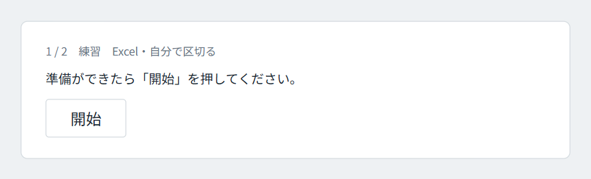
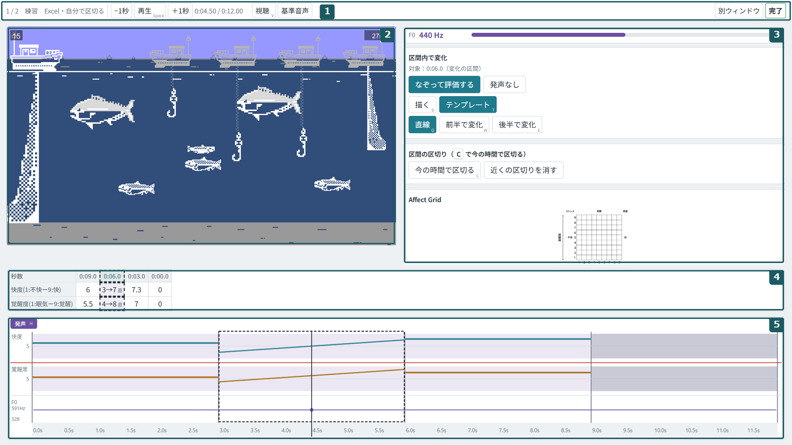
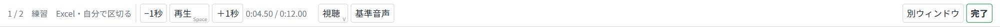
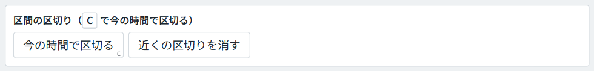
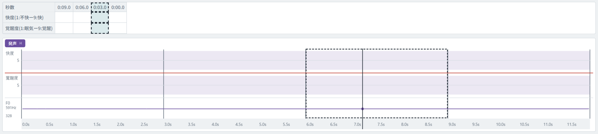
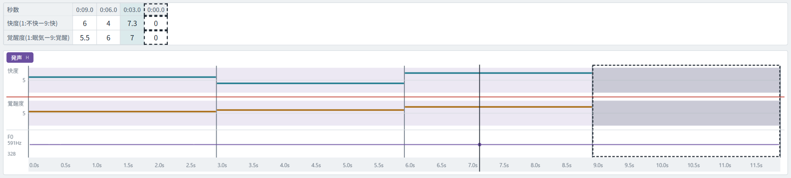
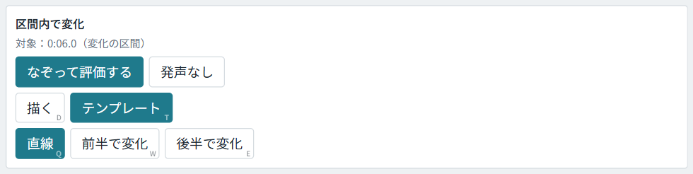
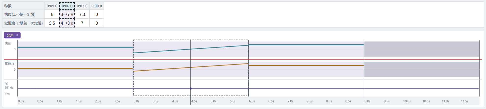
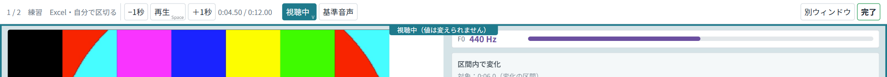
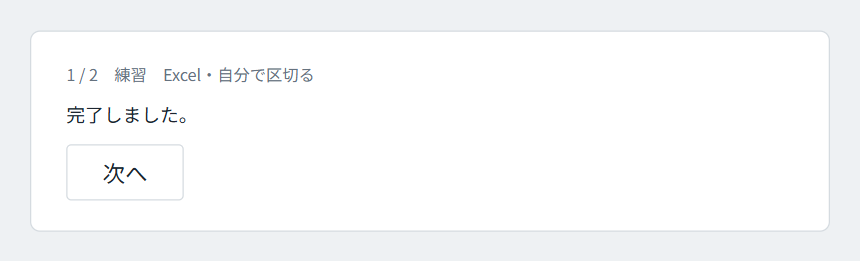

準備と画面
このツールですること
動画を見ながら、時間の区間ごとに「快度」と「覚醒度」を 1〜9 の数で表に入れる。
快度と覚醒度
- 快度：快適さや幸福感の度合い。1 が非常に不快、5 が中立、9 が非常に快適である。
- 覚醒度：興奮やエネルギーの度合い。1 が非常に眠い・リラックス、5 が普通、9 が非常に興奮している。
どちらも 1〜9 の範囲で入れる。5.3 のような小数も使える。
何を思い浮かべて評価するかは、役によって違う。
プレイの直後に、自分のプレイの録画を評価する。声がどう聞こえるかではなく、プレイ中に自分が感じていたことを思い出して入れる。
録画は実験者が選び、評価する範囲（プレイの始めから終わり）を合わせてから渡す。
他の人（発声者）の動画を評価する。何を手がかりに評価するかは、実験者の説明に従う。
動画と評価する範囲は、実験者があらかじめ決めてある。
動画はこの PC の中だけで処理される。インターネットへ送られることはない。
評価を始めるまで
準備は実験者が行う。評価する人は、画面に「開始」が出たら押すだけでよい。
- 最初の 1 本は練習である。画面の上に「練習」と出る。練習で操作に慣れてから本番に進む。
- 画面の上には「2 / 4」のように、今が何本目かが出る。
- 「開始」の画面が出ている間は、キーを押しても何も起きない。準備ができたらマウスで「開始」を押す。

実験の間は、ブラウザのタブやウィンドウを閉じない。困ったときは操作を止めて実験者を呼ぶ。
画面の見方
画面は、上のボタンの列、左の動画、右の操作の欄、その下の表、いちばん下の評価グラフの 5 つでできている。


| 番号 | 部分 | 何に使うか |
|---|---|---|
| 1 | ボタンの列 | 再生・停止、見直し、完了。左端に今が何本目かが出る。 |
| 2 | 動画 | 評価する動画。 |
| 3 | 右の操作の欄 | 上から、声の高さ（F0）の今の値、「区間内で変化」（6 章）、「区間の区切り」（4 章）、感情と数の対応を示す図（Affect Grid）とメモ欄。 |
| 4 | 表 | 区間ごとの快度と覚醒度を入れる（5 章）。 |
| 5 | 評価グラフ | 入れた値の線、区間の区切り、声の高さを時間に沿って見る。 |
ボタンの列

| ボタン | はたらき |
|---|---|
| −1秒・＋1秒 | 1 秒戻る・進む。 |
| 再生 | 再生と停止を切り替える。Space キーでも同じ。 |
| 時刻 | 今の位置と動画の長さ。評価する範囲の外にいるときは「区間外」と出る。 |
| 視聴 | 入れた値を見ながら止まらずに再生する。この間は値を変えられない（見直し用）。 |
| 基準音声 | 基準の「あ」の声をもう一度聴く。評価の途中で基準と比べたいときに使う。 |
| 別ウィンドウ | 動画だけを別のウィンドウに出す。ダブルクリックで全画面になる。 |
| 完了 | 評価を終える。押すと確認が出る（7 章）。 |
表
- 上の行が快度、下の行が覚醒度である。
- 列が区間（評価する時間のまとまり）である。左から時間の順に並ぶ。列の見出しは、その区間の終わりから評価する範囲の終わりまでの残りの秒数である。
- 右の操作の欄の下のほうに、感情と数の対応を示す図と、メモ欄がある。判断に迷ったことなどをメモ欄に書いてよい。
評価グラフ
- 入れた値が線で出る。上の欄が快度、その下の欄が覚醒度、いちばん下が声の高さ（F0）である。
- 声のある所は薄い紫で塗られる。声の無い区間を見分けるのに使う。グラフの右上の「発声」（H キー）で表示を切り替えられる。
- グラフの下端の目盛りの帯を押すと、その時刻へ移る。
- 評価する範囲の外は薄く表示される。区間の区切りは縦線で示される。
- Ctrl を押しながらマウスのホイールを回すと、マウスを置いた時刻を中心に、グラフの時間軸を拡大・縮小できる。拡大している間は、Shift を押しながらホイールを回すとグラフを左右に送れる。
評価の手順
区間を区切る
最初は動画全体が 1 つの区間である。気持ちが変わった所で「今の時間で区切る」を押し、区間を分けていく。
区切り方
- 動画を再生し、気持ちが変わった所で止める（Space）。
- 位置を細かく合わせたいときは、
,キーで 1 コマ戻り、.キーで 1 コマ進む。Shift+←→ で 0.1 秒ずつ動く。 - 右の操作の欄の「今の時間で区切る」を押す（C キーでもよい）。その位置で区間が 2 つに分かれ、表の列が 1 つ増える。


区切りを直す
- 「近くの区切りを消す」：今の位置にいちばん近い区切りを消す。
- 評価グラフを右クリックすると、そこに区切りを置ける。区切りの線の上で右ドラッグすると動かせ、動かさずに右クリックすると消せる。
- Ctrl+Z で 1 つ前の操作に戻せる。Ctrl+Y でやり直せる。
区切る前に入れた値は、区切った後の 2 つの区間の両方に引き継がれる。先に大まかに値を入れてから区切ってもよいし、先に区切ってから値を入れてもよい。
← → キーで、前・次の区間の始めへ移れる。区切った区間を順に見直すときに便利である。
値を入れる
表のセルをクリックし、1〜9 の数を打って Enter を押す。声の無い区間には 0 を入れる。
数の入れ方
- 入れたい区間のセルをクリックする。
- 数を打つ。小数は「5.3」と打つか、数字を 2 つ続けて「5」「3」と打つ（5.3 になる）。小数は第 1 位まで入る。
- Enter・Tab・矢印キーで確定し、隣のセルへ移る。
評価グラフの快度・覚醒度の欄でも値を入れられる。欄を左クリックすると、クリックした位置の区間に、その高さの値が入る。左ボタンを押したまま横になぞると、なぞった区間のそれぞれに、マウスが通ったときの高さの値が入る。入れた値を変えるときも、同じ操作で上書きする。

声の無い区間：0
- 0 は「評価の値」ではなく「発声なし」の印である。
- 片方の行に 0 を入れると、もう片方も自動で 0 になる。
- 0 の区間に 1〜9 を入れ直すと、もう片方の行は空欄に戻る。両方の行に入れ直す。
- グラフでは、0 の区間は灰色の帯で示される。
1〜9 の外の数（10 や 0.5 など）は入らない。打っても確定するときに消える。
再生が区間の終わりで止まるとき
実験の設定によっては、再生すると区間の終わりで自動で止まる。止まったら、その区間の値を入れて Enter を押す。次の区間が始まり、その終わりでまた止まる。同じ区間をもう一度聴きたいときは R キーを押す。
区間の中で気持ちが変わるとき
1 つの区間の中で気持ちがだんだん変わったときは、そのセルを選んで「なぞって評価する」を押し、評価グラフで変化を入れる。
細かい区切りをたくさん入れる代わりに使う、例外的な入れ方である。ふつうは 4 章と 5 章の入れ方で足りる。
変化の区間にする
- 変化を入れたい区間のセルをクリックする。
- 右の操作の欄の「なぞって評価する」を押す。ボタンが光り、その区間が変化の区間になる。対象の区間は、表とグラフに点線の枠で示される。
- 下のどちらかの入れ方で、評価グラフに変化を入れる。

「描く」を押し、評価グラフの快度または覚醒度の欄を、変化の区間の中でなぞる。なぞった線がそのまま値の動きになる。なぞった線が隣の区間にかかっても、描かれるのは変化の区間の中だけである。
「テンプレート」を押し、形を選ぶ。
- 「直線」（Q）：一定の速さで変わる。
- 「前半で変化」（W）：始めに大きく変わり、後は落ち着く。
- 「後半で変化」（E）：始めはゆっくりで、終わりに大きく変わる。
評価グラフの変化の区間の中で、始めの高さから終わりの高さへドラッグする。選んだ形の曲線が入る。後から形のボタンを押すと、始めと終わりの値はそのままで形だけが変わる。

表での見え方と戻し方
- 変化の区間のセルには、「3→7 直」のように始めの値→終わりの値と形が出る（直＝直線、前＝前半で変化、後＝後半で変化、描＝自分で描いた）。
- 変化の区間のセルには数を打てない。値はグラフで直す。
- もう一度「なぞって評価する」を押すと、普通のセルに戻る。値は区間の平均になる。
- 変化の区間を声なしにするときは「発声なし」を押す。もう一度押すと空欄に戻る。
D・T・Q・W・E のキーは、セルに入力している途中でも使える。セルに文字は入らない。
見直して完了する
すべての区間に値が入ったか確かめてから、右上の「完了」を押す。完了した後は値を変えられない。
- 表に空欄のセルが残っていないかを確かめる。
- 必要なら「視聴」（V キー）で、入れた値を見ながら最初から再生する。視聴の間は値を変えられないので、直すときはもう一度「視聴」を押して戻る。
- 右上の「完了」を押す。「評価を終えて完了しますか？」と出るので、よければ OK を押す。
- アンケートがあるときは「アンケートを開く」が出る。押して別のタブで答える。
- 「次へ」を押して次の動画へ進む。最後の動画では「すべての試行が終わりました」と出る。


完了すると、その動画の評価は変えられない。押す前に、空欄と 0 の付け忘れを確かめる。
評価の結果は自動で保存される。評価する人がファイルを保存する操作は要らない。
困ったとき
キーとマウスの操作
よく使うキーは Space（再生・停止）、C（区切る）、Ctrl+Z（取り消し）の 3 つである。マウスでは、評価グラフの快度・覚醒度の欄を左クリックして値を入れ、評価グラフを右クリックして区切りを置く。
キー
| キー | はたらき |
|---|---|
| Space | 再生・停止 |
| C | 今の時間で区切る |
| Ctrl+Z ／ Ctrl+Y | 取り消し ／ やり直し |
| ← → | 前の区間・次の区間の始めへ移る（セルに入力中はセルの移動） |
| Shift+← → | 0.1 秒戻る・進む |
, ／ . | 1 コマ戻る ／ 1 コマ進む（Ctrl+← → でも同じ） |
| Enter ／ Tab | セルの値を確定して隣のセルへ移る |
| V | 視聴（見直し）の開始・終了 |
| H | 声のある所の表示を切り替える |
| R | 区間の終わりで止まる設定のとき、同じ区間をもう一度聴く |
| D ／ T | 変化の区間で「描く」／「テンプレート」に切り替える |
| Q ／ W ／ E | テンプレートの形：直線 ／ 前半で変化 ／ 後半で変化 |
マウス
| 操作 | はたらき |
|---|---|
| 表のセルを左クリック | そのセルを選び、数を打てるようにする（5 章） |
| 評価グラフの快度・覚醒度の欄を左クリック | クリックした位置の区間に、その高さの値を入れる（5 章） |
| 同じ欄を左ドラッグ | なぞった区間のそれぞれに、マウスが通ったときの高さの値を入れる。変化の区間では、なぞった線が値の動きになる（6 章） |
| 評価グラフの下端の目盛りの帯か、声の高さ（F0）の欄を左クリック | その時刻へ移る |
| 評価グラフの区切りの無い所を右クリック | そこに区切りを置く（4 章） |
| 区切りの線を右クリック | その区切りを消す |
| 区切りの線を右ドラッグ | その区切りを動かす |
| Ctrl+ホイール | マウスを置いた時刻を中心に、評価グラフの時間軸を拡大・縮小する |
| Shift+ホイール | 拡大している間、評価グラフを左右に送る |
| 別ウィンドウの動画をダブルクリック | 全画面にする。もう一度ダブルクリックで戻る |
Mac では Ctrl を ⌘（Command）に読み替える。ボタンの右下に小さく出ている文字が、そのボタンのキーである。
よくある疑問
迷ったら Ctrl+Z で戻せる。戻せないのは「完了」だけである。
動画を巻き戻して何度見てもよいか
ツールでは何度でも巻き戻せる。実験の中で巻き戻してよいかは、実験者の説明に従う。
区切りを間違えた
すぐなら Ctrl+Z で戻す。後で気づいたときは、その区切りの近くへ移って「近くの区切りを消す」を押すか、評価グラフの区切りの線の上で右クリックする。
数を打ったのにセルに入らない
次のどれかに当たっていないかを確かめる。
- 1〜9（声なしは 0）の外の数を打った。
- そのセルが変化の区間である（「3→7 直」のような表示）。値は評価グラフで直す。
- 「視聴」の途中である。画面の上端に「視聴中（値は変えられません）」と出ていれば、もう一度「視聴」を押して戻る。
片方の行が勝手に空欄になった
0（声なし）の区間に 1〜9 を入れると、もう片方の行の 0 は空欄に戻る。空欄になった行にも値を入れる。
再生しても区間の終わりで止まってしまう
区間ごとに止まる設定になっている。値を入れて Enter を押すと次の区間へ進む。もう一度聴くには R キーを押す。
キーを押しても何も起きない
「開始」の画面が出ている間と、完了した後は、キーを押しても反応しない。評価の途中で反応しないときは、動画か表を一度クリックしてから押し直す。それでも反応しなければ実験者を呼ぶ。
完了を押してしまった
完了した評価は評価する人の画面では直せない。操作を止めて実験者に伝える。実験者がその動画の評価をやり直せるようにする。